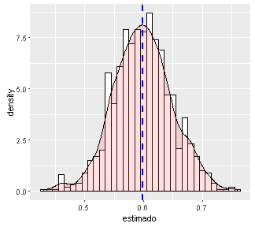
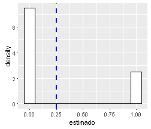
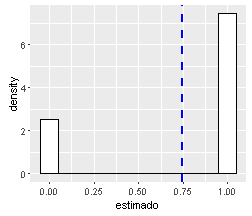
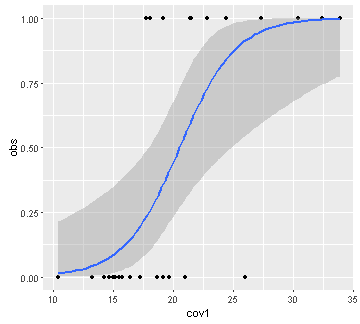

El concepto de ocupación y su modelado
Modelo estatico de ocupación
Diego J. Lizcano
ULEAM, Manta
Simulaciones y modelos
Las simulaciones son versiones simplificadas de un sistema real, en el cual podemos probar como varían ciertos parámetros que afectan los estimados de otros parámetros.
All models are wrong but some are useful.
George Box, 1978

Por que son útiles las simulaciones:
- Conozco los parámetros verdaderos.
- Son una buena forma de aprender.
- Podemos calibrar un modelo.
- Al ser capaces de simular datos bajo cierto modelo, se garantiza que uno entiende el modelo, sus restricciones y limitaciones.

Imitar la forma como se originan las medidas de interes. La ocupación (\(\psi\)) y la detectabilidad (p).
Aproximación mecanistica (mecanismo).
Hay dos procesos
Proc. ecológico z.
El cual gobierna la presencia de la especie.
La especie está (z=1), o no está (z=0) en el lugar. Simulado a partir de una distribución Bernoulli.

Proc. de observación y.
El cual gobierna la observación de la especie. La especie se observa (p=1), si es que la especie esta. Prob. condicional. Simulado con una distribución Bernoulli por el proceso ecologico.

Es importante entender que ambos procesos que se enlazan forma jerarquica.

El proceso ecológico (\(\psi\)) sigue una distribución Bernoulli.
El modelo de observación (\(p\)) sigue una distribución Bernoulli.
La probabilidad de ocurrencia, es una proporcion tambien (ocupación)
\(\psi\) = Pr(\(z_{i}\)=1)
La probabilidad de observar la especie dado que la especie esta presente es.
\(p\) = Pr(\(y_{i}\)=1 \(\mid\) \(z_{i}\)=1)
Ahora jugemos un poco con la distribución Bernoulli
Es una variación de la distribución binomial
Variemos ni y pi y observemos como la media estimada (azul) se acerca a pi
ni<-10 # numero de datos
pi<- 0.5 # probabilidad (~proporcion de unos)
# Generemos datos con esa informacion
daber<-data.frame(estimado=rbinom(ni, 1, pi))
# Grafiquemos
library(ggplot2)
ggplot(daber, aes(x=estimado)) +
geom_histogram(aes(y=..density..), # Histograma y densidad
binwidth=.1, # Ancho del bin
colour="black", fill="white") +
geom_vline(aes(xintercept=mean(estimado, na.rm=T)),
color="blue", linetype="dashed", size=1) # media en azul
Cambiemos la aproximación. Estudiemos la relación a partir de los datos y las covariables
Relación parametros y covariables
Ocupación y covariables
La ocupación (\(\psi\)) es un conjunto de 1s y 0s.
Las covariables pueden ser continuas o discretas.
| sitio | psi | cov1 | cov2 | cov3 |
|---|---|---|---|---|
| 1 | 1 | 10 | 1.5 | bosque |
| 2 | 0 | 15 | 1.1 | cafe |
| 3 | 1 | 20 | 5.5 | bosque |
| 4 | 0 | 30 | 2.1 | cacao |
| 5 | 0 | 40 | 2.2 | bosque |
Regresión logistica
Observación y covariables
La Observaciones son un conjunto de 1s y 0s.
Las covariables pueden ser continuas o discretas.
| obs | cov1 | cov2 | cov3 |
|---|---|---|---|
| 1 | 10 | 1.5 | nublado |
| 0 | 15 | 1.1 | soleado |
| 1 | 20 | 5.5 | nublado |
| 0 | 30 | 2.1 | nublado |
| 0 | 40 | 2.2 | soleado |
Regresión logistica
Regresión logistica
data(mtcars)
obs<-mtcars$vs
cov1<-mtcars$mpg
table3<-cbind.data.frame (obs,cov1)
library(ggplot2)
ggplot(table3, aes(x=cov1, y=obs)) + geom_point() +
geom_smooth(method = "glm", method.args = list(family = "binomial"))

Regresión logistica permite encontrar la relación entre una variable binaria y covariables
Poniendo todo junto

- Pasar a SimulMachalilla
Cronograma
| Día-jornada | |
|---|---|
| Jue Mañana | 1. Introducción a R |
| 2. R como herramienta de modelado | |
| Jue Tarde | 3. El concepto de ocupación y su modelado |
| 4. Modelo de occu. estático - 101 unmarked | |
| Vie Mañana | 5. Modelo de occu. estatico - Sim Machalilla1 |
| 6. Modelo de occu. estatico - Sim Machalilla2 | |
| Vie Tarde | 7. Modelo de occu. estático pecari Machalilla |
| 8. Modelo de occu. dinamico (ML y Bayes) | |
| 9. Otros modelos jerárquicos |